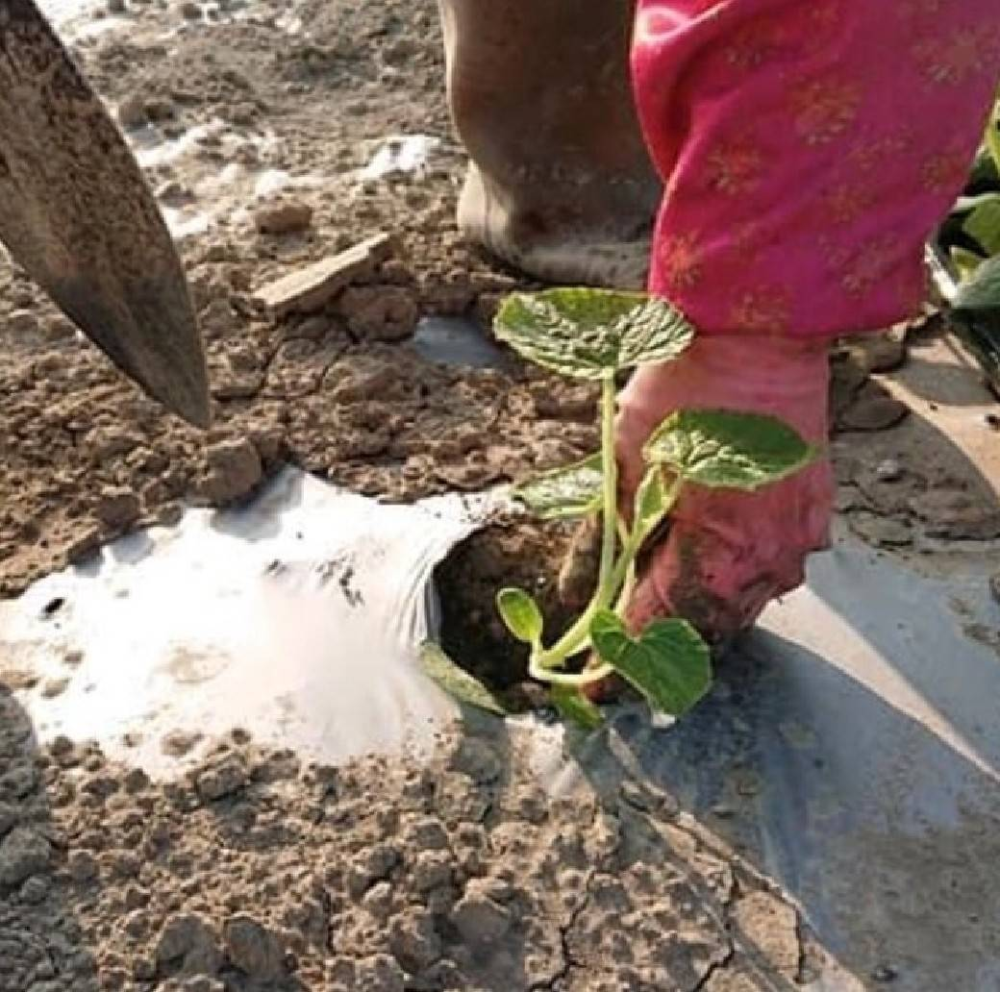

來幫你們科普一下
美濃瓜就是香瓜，很多人會誤會美濃瓜產自美濃，但其實是因為英文名叫melon，日治時代用日語發音，聽起來就像美濃，因而得名。
主要產地在 : 雲林、嘉義、台南、高雄等等
美濃瓜的產季
產季為4 - 11月，美濃瓜會因為受到陽光的照射和熱度影響而在每個季節有成熟快慢。
美濃瓜的產季分為三個階段 : 春天 (75 - 80天)→夏天(45天)→秋天(50 - 55天)
而每個產季都有不同的生成時間，收成時間是隨著溫度變化而改變的。
其他產地的香瓜也會也因為溫度濕度不一樣而有不同的口味。
美濃瓜的營養價值
在世界各國醫生的認定下，美濃瓜具有很高的營養價值。它含有維生素A，B，C和鎂，鈉和鉀等礦物質。
鉀：它可以幫助控制血壓，並能預防中風，甚至還可以減少腎結石問題。
維生素A：這對保持健康的皮膚有益。
維生素C：這是一個抗氧化劑。這有助於防止心臟疾病，甚至癌症。
β-胡蘿蔔素：和維生素C相結合可以防止許多慢性疾病。
葉酸：對孕婦跟胎兒是很重要的，甚至可以預防子宮頸癌和骨質疏鬆症，更是一個溫和的抗抑鬱藥。
纖維：會使你感覺飽，能助於減肥，也可以緩解便秘。
美濃瓜的一生
發芽 幼苗容易受損所以必須先種植在小盆栽裡面養育。 |
育苗 細心的呵護下，長到了一定的程度。 |
定植 再將小苗種植到土地裡。 |
||
 |
 | |||
 |
||||
播種 收成後，用種子繼續培育小苗。 |
結果(生成) 採生成熟的果實。 |
整理瓜藤、施肥澆水(開花) 整理分藤，使養分能平均的供給到各個地方。 |
採收清洗包裝步驟
| 採收 | 清洗 | 分級 | 裝箱 |
 |
|||
| 都是經由人工來採收美濃瓜的，先將採下來的作物經由卡車載往機台附近。 | 這個步驟會進行兩次 第一次 會先將香瓜倒入沖洗機。 第二次 清洗是將美濃光浸泡在水池中。 |
在水池中清洗完後再將香瓜送往選果機，香瓜會依不同大小隨選果機孔洞落下以達到分級的效果。 |
最後就是裝箱秤重然後打包上車送往最終販賣地點。 |
美濃瓜製品
美濃瓜不單單只能當水果吃而已還可以入菜及製作成甜點。
| 1.醃漬美濃瓜(一種家常小菜) | 2.美濃瓜生乳捲 |
|
|
| 3.美濃瓜水果塔 | 4.美濃瓜酥餅 |
 |


看完了這些美濃瓜的介紹，大家有沒有比較認識它呀！
如果有興趣的話農主隨時歡迎大家去打工呦～
地點：高雄市三民區民成街40號
電話：0905558312